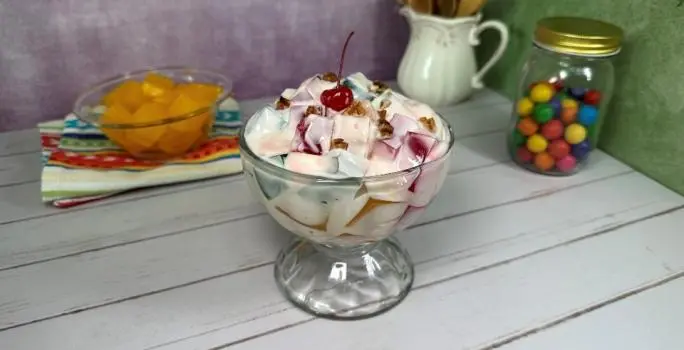

Gelatina de yogurth
El postre de gelatina de yogurth es muy fácil de hacer y que a todos les encanta. Puedes acompañarlo con frutas, miel, mermelada o lo que más te guste. ¡Perfecto si tienes poco tiempo!
CONSEJO NUTRICIONAL
El yogurth es una excelente fuente de proteínas y probióticos.
CONSEJO CULINARIO
Puedes añadir frutas frescas a la mezcla de gelatina para un toque extra de sabor y nutrición.